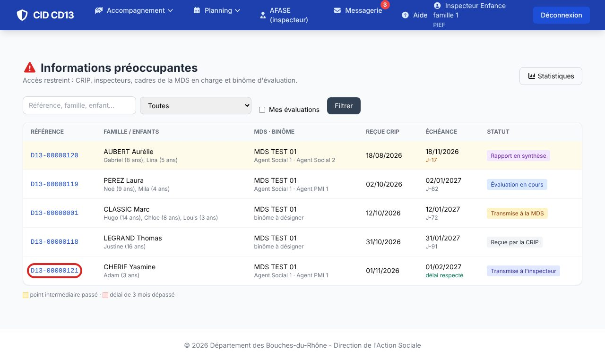
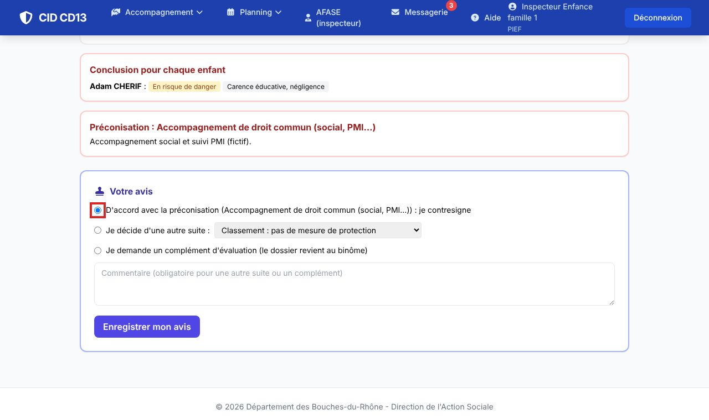
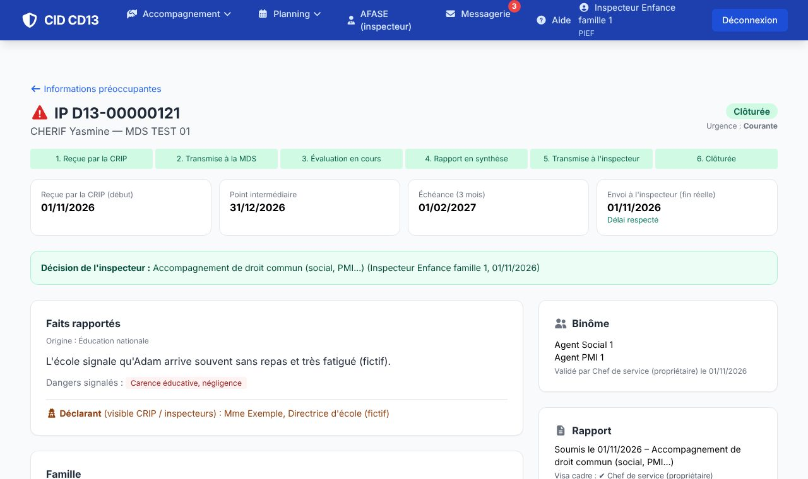

1Ouvrir l'IP transmise

- Vous êtes prévenu par message CID ; dans la liste, l'IP est au statut Transmise à l'inspecteur. Ouvrez son rapport.
2Donner son avis


- D'accord avec la préconisation : vous la contresignez.
- Autre suite : choisissez la décision (classement, droit commun, AED, saisine du procureur…) et motivez-la.
- Complément d'évaluation : le dossier revient au binôme, avec votre commentaire.
- Cliquez sur Enregistrer mon avis : en cas d'accord ou d'autre suite, l'IP est clôturée avec votre décision.
Bon à savoir
- Une IP n'est visible que par la CRIP, les inspecteurs, les cadres de la MDS en charge et le binôme d'évaluation. L'identité du déclarant n'est visible que par la CRIP et les inspecteurs.
Et ensuite ?
Cliquez sur une image pour l'agrandir. Le cadre rouge montre où cliquer ou quoi remplir. Toutes les données affichées sont fictives.